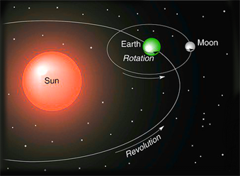

This post is based on the project report that was written during the astronomical observation class in 2019.
Introduction
What is the purpose of this post?
The purpose of this post is to help you grasp the concept of the celestial sphere and the motions of celestial objects by utilizing the celestial sphere model. In detail, you will learn and understand that diurnal motion is the result of Earth’s rotation, and annual motion is the result of Earth’s revolution. Furthermore, you will gain insights into solar time, sidereal time, the celestial coordinate system (horizontal and equatorial), and coordinate conversion.
Why do you learn this?
All astronomical studies are based on the results of astronomical observations. The majority of these observations are conducted on Earth, with some exceptions. However, Earth is not an inertial frame of reference because it both rotates on its axis and orbits the Sun. Consequently, when we observe celestial objects from Earth, we inevitably observe apparent motion due to Earth’s own movements. Therefore, it is essential to identify the apparent motion in the motion of celestial objects. Additionally, all celestial objects are projected onto the celestial sphere, and as a result, their movements occur on the surface of this sphere. For these reasons, learning spherical astronomy is crucial for astronomers.
Celestial Sphere Model
Celestial Sphere
The Celestial Sphere is an imaginary sphere with an infinite radius centered at the Earth’s center. While most motions of celestial objects are a result of Earth’s motion, for the sake of convenience, we assume that the Earth is fixed, and all celetial objects are embedded on the surface of the Celetial Sphere. We attribute the motions of celestial objects to the motion of the Celestial Sphere.
Since the Celestial Sphere is a sphere defined by a set of points equidistant from its center, we designate certain special points or circles for convenience. There are various methods for naming these points and circles, but we typically use Earth’s Rotation, Earth’s Revolution, and Observer. For each of them, we begin by selecting a reference axis and a reference plane that is perpendicular to the axis. We then extend the axis and plane infinitely, resulting in three intersections (two points and one circle), each of which is given a specific name. If additional points or circles on the Celestial Sphere are required, we can refer to 9 intersections (6 points and 3 circles) for reference.
Earth’s Rotation
- Reference axis: Earth’s rotation axis
- Reference plane: The plane containing Earth’s equator
Two points on the Celestial Sphere
- Celestial North Pole: The point near Earth’s North Pole
- Celestial South Pole: The point near Earth’s South Pole
One circle on the Celestial Sphere
- Celestial Equator: The great circle determined by the reference plane of Earth’s Rotation
Earth’s Revolution
- Reference axis: The axis parallel to Earth’s revolution axis and passing through Earth’s center
- Reference plane: The plane containing Earth’s orbital path around the Sun
Two points on the Celestial Sphere
- Ecliptic North Pole: The point near Earth’s North Pole
- Ecliptic South Pole: The point near Earth’s South Pole
One circle on the Celestial Sphere
- Ecliptic: The great circle determined by the reference plane of Earth’s Revolution
Observer
- Reference axis: The line perpendicular to the reference plane at the observer’s location
- Reference plane: The plane parallel to the tangent plane of the Earth at the observer’s location and passing though Earth’s center
Two points on the Celestial Sphere
- Zenith: The point near observer’s head
- Nadir: The point near observer’s feet
One circle on the Celestial Sphere
- Horizon: The great circle determined by the reference plane of observer
Additional Points and Circles
Circle on the Celestial Sphere
- Meridian: The great circle passing though the Celestial North Pole, the Celestial South Pole, the Zenith, and the Nadir
4 points on the Ecliptic
- Vernal Equinox : The point of intersection of the Ecliptic and the Celestial Equator, where the Sun moves from the celestial southern hemisphere to the celestial northern hemisphere
- Summer Solstice : The point on the Ecliptic nearest to the Celestial North Pole
- Autumnal Equinox : The point of intersection of the Ecliptic and the Celestial Equator, where the Sun moves from the celestial northern hemisphere to the celestial southern hemisphere
- Winter Solstice : The point on the Ecliptic nearest to the Celestial South Pole
4 points on the Horizon
- North point : The point of intersection of the Horizon and the Meridian near the Celestial North Pole
- East point : The point on the Horizon located 90 degree clockwise from the North point
- South point : The point of intersection of the Horizon and the Meridian near the Celestial South Pole
- West point : The point on the Horizon located 90 degree clockwise from the South point
Altitude of Celestial Poles

Figure 1 (a) represents a situation in which the observer is located in the northern hemisphere, while Figure 1 (b) depicts a case in the southern hemisphere. In these diagrams, the blue line represents the horizon, the red line signifies the celestial equator, the black line is perpendicular to the horizon, the green line is perpendicular to the celestial equator, the orange point represents the observer, the green point represents Polaris, and \phi denotes the observer’s latitude. From these figures, we can conclude that the altitude of celestial poles is equal to the observer’s latitude.
Earth’s Rotation
First, let’s review the following concept for convenience.
Figure 2 (a) illustrates the left-hand screw rule, while Figure 2 (b) illustrates the right-hand screw rule. Imagine you’re directly looking at your thumbs and curling your other fingers. If you focus on your left thumb, the rotation direction is clockwise. Conversely, if you focus on your right thumb, the rotation direction is counterclockwise. To determine the rotation direction, simply observe your thumbs, curl your other fingers, and match the finger’s rotation direction with the given rotation direction: clockwise for the left hand and counterclockwise for the right hand.
In 3D space, the direction of a rotation vector is uniqe, but the rotation direction is not. Therefore, when describing a rotation, it is necessary to specify the viewpoint or indicate the direction of the rotation vector.

If your right thumb points in the direction of (Celestial) North Pole, then the Earth’s rotation follows right-hand screw rule. In other words, if you were to observe Earth’s North Pole from space, you would see that it rotates counterclockwise. Therefore, the direction of the Earth’s rotation vector is from South Pole to North Pole. Due to relative motion, the celestial sphere appears to rotate in the opposite direction around the Earth.
When you rotate the celestial sphere model, you can observe that the Sun and all celestial objects rise in the east and set in the west in all hemispheres. Furthermore, you’ll notice that at the Sun’s upper culmination (its highest point), it appears in the southern sky in the northern hemisphere and in the northern sky in the southern hemisphere. At the poles, the Sun either remains either continuously visible or permanently hidden.
Sidereal Time
The (Local) Hour Angle is the inversely measured right ascension from the intersection of the celestial equator and the meridian above horizon. When the hour angle of a celestial object is zero, we call that the celestial object is at its upper culmination.
The (Local) Sidereal Time is the hour angle of the vernal equinox. By definition, sidereal time \Theta of a celestial object is equal to H+\alpha, where H is hour angle, and \alpha is right ascension of the celestial object.
\begin{align*} \text{Sidereal time} = \Theta & = H_{\text{vernal equinox}} \\ & = H + \alpha \\ & = \alpha_{\text{celestial object at its upper culmination}} \end{align*}
The (Local) Solar Time is calculated by adding the hour angle of the Sun to 12 hours.
\text{Solar time} = S = H_{\odot} + \text{12 h}
Therefore, we get the following equation.
\begin{align*} \text{Sidereal time} = \Theta & = H_{\odot} + \alpha_{\odot} \\ & = S - \text{12 h} + \alpha_{\odot} \end{align*}
The right ascension of the Sun \alpha_{\odot} increases about +\text{4 min} per day.
| Time | \alpha_{\odot} |
|---|---|
| Vernal Equinox | \text{0 h} |
| Summer Solstice | \text{6 h} |
| Autumnal Equinox | \text{12 h} |
| Winter Solstice | \text{18 h} |
This solar time is actually local solar time. In Korea, the local solar time of Seoul is that of 127° E but our clock uses the local solar time of 135° E (UTC+9). As a result, there is a difference of about 8° (equivalent to 32 minutes). Therefore, in Seoul, the Sun is at its upper culmination at approximately 12:32 KST.
Spherical Coordinate System
Horizontal System vs. Equatorial System
Definition of (Az, Alt) in Horizontal System
Azimuth (Az, A) of a celestial object is the angle (or angular distance) measured commonly clockwise from the south point along the horizon. Azimuth values are typically within the range of [0°, 360°].
Altitude (Alt, a) of a celestial object is the angle (or angular distance) measured from the horizon along the great circle passing through the celestial object and the zenith. Altitude values fall within the range [-90°, +90°]. A positive altitude indicates that the object is above the horizon, while a negative altitude indicates that the object is below the horizon.
Definition of (RA, Dec) in Equatorial System
Right Ascension (RA, \alpha) is a celestial longitude, equivalent to Earth’s longtiude, except that it is measured from the vernal equinox instead of Greenwich. It is measured only in the eartward direction.
Declination (Dec, \delta) is a celestial latitude, equivalent to Earth’s latitude, except that N and S are respectively replaced by + and -.
A formula to convert (RA, Dec) to (Az, Alt)
In the figure above, the point P has coordinates (x, y, z) in xyz Cartesian coordinates system, and (x', y', z') in x'y'z' Cartesian coordinates system. Each of these coordinates has the following relations with spherical coordinates in its respective frame.
\begin{align*} x & = \cos \theta \cos \psi \\ y & = \cos \theta \sin \psi \\ z & = \sin \theta \end{align*}
\begin{align*} x' & = \cos \theta' \cos \psi' \\ y' & = \cos \theta' \sin \psi' \\ z' & = \sin \theta' \end{align*}
The primed coordinates are related to the unprimed coordinates by the following equations.
\begin{bmatrix} x \\ y \\ z \end{bmatrix} = \begin{bmatrix} 1 & 0 & 0 \\ 0 & \cos \chi & -\sin \chi \\ 0 & \sin \chi & \cos \chi \end{bmatrix} \begin{bmatrix} x' \\ y' \\ z' \end{bmatrix}
\begin{bmatrix} x' \\ y' \\ z' \end{bmatrix} = \begin{bmatrix} 1 & 0 & 0 \\ 0 & \cos \chi & \sin \chi \\ 0 & -\sin \chi & \cos \chi \end{bmatrix} \begin{bmatrix} x \\ y \\ z \end{bmatrix}
In the figure above, we have \chi = 90^{\circ} - \psi. The values of (x, y, z) and (x', y', z') are determined by the following equations.
\begin{align*} x & = \cos a \cos(90^{\circ} - A) \\ & = \cos a \sin A \\ y & = \cos a \sin(90^{\circ} - A) \\ & = \cos a \cos A \\ z & = \sin a \end{align*}
\begin{align*} x' & = \cos \delta \cos(90^{\circ} - H) \\ & = \cos \delta \sin H \\ y' & = \cos \delta \sin(90^{\circ} - H) \\ & = \cos \delta \cos H \\ z' & = \sin \delta \end{align*}
Thus, we get the following equations.
\begin{align*} \begin{bmatrix} x \\ y \\ z \end{bmatrix} & = \begin{bmatrix} 1 & 0 & 0 \\ 0 & \cos (90^{\circ} - \phi) & -\sin (90^{\circ} - \phi) \\ 0 & \sin (90^{\circ} - \phi) & \cos (90^{\circ} - \phi) \end{bmatrix} \begin{bmatrix} x' \\ y' \\ z' \end{bmatrix} \\ & = \begin{bmatrix} 1 & 0 & 0 \\ 0 & \sin \phi & -\cos \phi \\ 0 & \cos \phi & \sin \phi \end{bmatrix} \begin{bmatrix} x' \\ y' \\ z' \end{bmatrix} \end{align*}
\begin{align*} \begin{bmatrix} x' \\ y' \\ z' \end{bmatrix} & = \begin{bmatrix} 1 & 0 & 0 \\ 0 & \cos (90^{\circ} - \phi) & \sin (90^{\circ} - \phi) \\ 0 & -\sin (90^{\circ} - \phi) & \cos (90^{\circ} - \phi) \end{bmatrix} \begin{bmatrix} x \\ y \\ z \end{bmatrix} \\ & = \begin{bmatrix} 1 & 0 & 0 \\ 0 & \sin \phi & \cos \phi \\ 0 & -\cos \phi & \sin \phi \end{bmatrix} \begin{bmatrix} x \\ y \\ z \end{bmatrix} \end{align*}
In conclusion, we get the following two conversion fomulas.
When we know (\alpha=\Theta-H, \delta, \phi), we can obtain (A, a) by using following equations.
\begin{align*} \cos a \sin A & = \cos \delta \sin H \\ \cos a \cos A & = \sin \phi \cos \delta \cos H - \cos \phi \sin \delta \\ \sin a & = \cos \phi \cos \delta \cos H + \sin \phi \sin \delta \end{align*}
When we know (A, a, \phi), we can obtain (\alpha=\Theta-H, \delta) by using following equations.
\begin{align*} \cos \delta \sin H & = \cos a \sin A \\ \cos \delta \cos H & = \sin \phi \cos a \cos A + \cos \phi \sin a \\ \sin \delta & = - \cos \phi \cos a \cos A + \sin \phi \sin a \end{align*}
Therefore, we can conclude that we need to know sidereal time and latitude when performing conversions between (RA, Dec) and (Az, Alt).
Targets on Meridian
Let \alpha' be the right ascension of celestial object at its upper culmination. By definition of sidereal time, the following equation holds.
\begin{align*} \Theta & = S - \text{12 h} + \alpha_\odot \\ & = \alpha' \end{align*}
Thus we get the following equation.
S = \text{12 h} - \alpha_\odot + \alpha'
Hour Angle of Targets
By definition of sidereal time, the following equation holds.
\begin{align*} \Theta & = S - \text{12 h} + \alpha_\odot \\ & = H + \alpha \end{align*}
Thus we get the following equation.
H = S - \text{12 h} + \alpha_\odot - \alpha
References
- Introductory Astronomy: The Celestial Sphere, http://astro.wsu.edu/worthey/astro/html/lec-celestial-sph.html
- Meridian (astronomy), https://en.wikipedia.org/wiki/Meridian_(astronomy)
- Right hand screw rule, https://www3.eng.cam.ac.uk/~hemh1/gyroscopes/screwrule.html
- Rotation Vs. Revolution: What Are The Differences?, https://differencecamp.com/rotation-vs-revolution
- SUPPLEMENT: MOTIONS IN THE SKY & COORDINATE SYSTEMS, https://rwoconne.github.io/rwoclass/astr1230/motions-coords.html
- Hannu Karttunen et al. Fundamental Astronomy. Sixth Edition. Springer (2016)